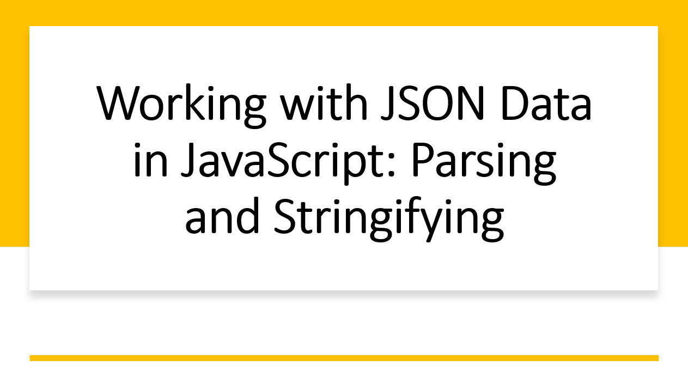

Introduction​
JSON (JavaScript Object Notation) is a lightweight data interchange format that is widely used for sending and receiving structured data. JavaScript provides built-in methods to parse JSON data into objects and stringify JavaScript objects into JSON format.
In this blog article, we'll explore how to work with JSON data in JavaScript, enabling you to exchange data seamlessly between applications.
Suggested Tutorials 📑:​
Why JSON is Important?​
JSON is a popular data format that is used to exchange data between applications. It is a lightweight format that is easy to read and write.
JSON is also language-independent, which means that it can be used to exchange data between applications written in different programming languages.
JSON is human-readable and easy to understand. It is also easy to parse and generate.
JSON is self-describing and easy to validate. It is also extensible and flexible.
1. JSON Syntax​
JSON consists of key-value pairs and supports various data types, including strings, numbers, arrays, and objects. JSON keys and string values must be enclosed in double quotes.
Here's an example of a JSON object:
{
"name": "John Doe",
"age": 30,
"address": {
"street": "123 Main St",
"city": "New York",
"state": "NY",
"zip": "10001"
},
"hobbies": ["music", "movies", "sports"]
}
2. Parsing JSON Data​
JavaScript provides the JSON.parse() method to parse JSON data into JavaScript objects. The JSON.parse() method takes a JSON string as an argument and returns a JavaScript object.
Here's an example of parsing JSON data into a JavaScript object:
const jsonString = '{"name": "Alice", "age": 25}';
const jsonObject = JSON.parse(jsonString);
console.log(jsonObject.name);
console.log(jsonObject.age);
Suggested Tutorials 📑:​
3. Stringifying JavaScript Objects​
The JSON.stringify() method converts a JavaScript object into a JSON-formatted string.
const person = {
name: "Bob",
age: 28,
isStudent: true
};
const jsonString = JSON.stringify(person);
console.log(jsonString);
4. Handling Arrays​
JSON supports arrays, which are ordered lists of values. Arrays are represented using square brackets and values are separated by commas.
Here's an example of a JSON array:
const jsonArray = '[{"name": "Mary"}, {"name": "David"}]';
const array = JSON.parse(jsonArray);
console.log(array[0].name);
Suggested Tutorials 📑:​
5. Reviving Functions (Advanced)​
When parsing JSON, you can provide a reviver function to customize the transformation of parsed values.
const jsonString = '{"createdAt": "2023-07-31"}';
const dateReviver = (key, value) => {
if (key === 'createdAt') {
return new Date(value);
}
return value;
};
const jsonObject = JSON.parse(jsonString, dateReviver);
console.log(jsonObject.createdAt);
6. Handling Errors​
When parsing JSON, you can provide an error handler function to handle errors that occur during parsing.
const jsonString = '{"name": "Alice", "age": 25}';
const errorHandler = (error) => {
console.log(error.message);
};
const jsonObject = JSON.parse(jsonString, errorHandler);
Suggested Tutorials 📑:​
Conclusion​
Working with JSON data is a fundamental skill in JavaScript, enabling seamless data exchange between different systems and applications. Whether you're parsing incoming data or preparing data for transmission, the JSON.parse() and JSON.stringify() methods allow you to effortlessly convert between JSON format and JavaScript objects.
We hope you found this article useful.
Happy coding! 🚀